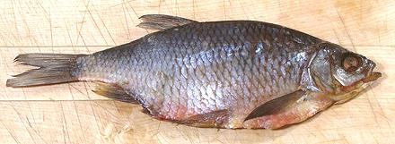
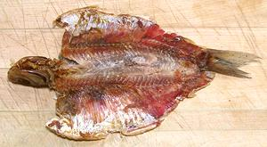

Vobla - Caspian Roach

[Rutilus caspicus - similar - Common Roach
Rutilus rutilus]
This fish, found in brackish and fresh waters, is native to the northern
and western reaches of the Caspian Sea. At spawning time It enters the
Volga, Ural, Emba, Terek and Kura river drainages. It may be a subspecies
of the Common Roach which has a much larger range, including Norway,
British Isles, Italy, the Adriatic basin, and Anatolia, but is
not native to Iberia. Both are IUCN rated "Least Concern", but the
Common Roach can become a pest.
The photo specimen, purchased from a multi-ethnic market in
Los Angeles (Sunland), was from Russia, 10-1/2 inches long and weighed
4 ounces. It was packed with three smaller fish. Dried, salted Vobla
is quite an institution in Russia and Ukraine, and judging by the stores
I buy it from, it is also known in Armenia, and no doubt Georgia and
Azerbajan as well. It is often brought as a hostess gift by travelers
from Moscow.
More on the Carp Family.

Buying:
In my experience this fish is easily available,
vacuum packaged in clear plastic, in the refrigerated section of any
market serving a Russian, Ukranian or Armenian community - which means
it is very common here in Los Angeles. It is cheap in Russia,
but not so much so around here. I have purchased it for about 2013 US
$11.50 / pound.
Eating:
This dried fish is heavily salted, flat, thin,
completely covered with large hard scales, full of bones and
stiff as a board - so how do you eat this thing? Do you really want
to eat this thing? No you don't - not until you've eaten one - they're
kind of addictive - so here's how to acquire the addiction. Please note,
this is not something you want to do when you are in a hurry, or have
plans to go somewhere.
- First, you need beer. You cannot eat Vobla without beer - and plenty
of it - preferably Russian beer. Around here that is most commonly
Baltica. This bottled beer has the unique advantage of a ring pull cap,
like on a can. No other sauce or condiment is used, but Vobla goes well
with conversation.
- Hold the fish firmly and Pull out all the fins.
- Now, open the belly of the fish (it has been disemboweled, because it
is illegal to sell it otherwise, at least in "over regulated"
California - botulism risk). Pry it open and squish it down flat,
inside up. Yes, it's ugly as sin, but sin does have its attractions,
no?
- Pull out the backbone. The thickest and easiest to recover flesh is
above the backbone.
- Pull off small bits of flesh from the inside as you can find them,
picking off any tiny bones, as best you can.
- Pop a little piece in your mouth and chew, along with a generous
swig of beer.
- When no more flesh can be found, discard the debris - and send
someone out for more Vobla, and more beer.
sf_voblaz 130809 - www.clovegarden.com
©Andrew Grygus - agryg@clovegarden.com - Photos
on this page not otherwise credited © cg1
- Linking to and non-commercial use of this page permitted